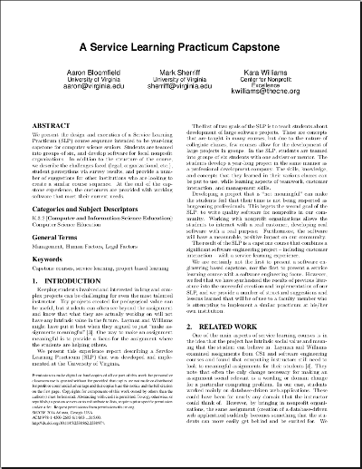

<!doctype html>
<html lang="en">
  <head>
    <meta charset="utf-8">
    <title>CS 4971: 11-deliverables slide set</title>
    <meta name="description" content="A set of slides for UVa's Service Learning Practicum course">
    <meta name="author" content="Aaron Bloomfield">
    <meta name="apple-mobile-web-app-capable" content="yes" />
    <meta name="apple-mobile-web-app-status-bar-style" content="black-translucent" />
    <meta name="viewport" content="width=device-width, initial-scale=1.0, maximum-scale=1.0, user-scalable=no, minimal-ui">
    <link rel="stylesheet" href="../slides/reveal.js/css/reveal.css">
    <link rel="stylesheet" href="../slides/reveal.js/css/theme/black.css" id="theme">
    <link rel="stylesheet" href="../slides/css/slp.css">
    <!-- Code syntax highlighting -->
    <link rel="stylesheet" href="../slides/reveal.js/lib/css/zenburn.css">
    <!-- Printing and PDF exports -->
    <script>
      var link = document.createElement( 'link' );
      link.rel = 'stylesheet';
      link.type = 'text/css';
      link.href = window.location.search.match( /print-pdf/gi ) ? '../slides/reveal.js/css/print/pdf.css' : '../slides/reveal.js/css/print/paper.css';
      document.getElementsByTagName( 'head' )[0].appendChild( link );
    </script>
    <!--[if lt IE 9]>
	<script src="../slides/reveal.js/lib/js/html5shiv.js"></script>
	<![endif]-->
    <script type="text/javascript" src="../slides/js/dhtmlwindow.js"></script>
    <script type="text/javascript" src="../slides/js/canvas.js"></script>
    <link rel="stylesheet" href="../slides/css/dhtmlwindow.css" type="text/css">
  </head>

  <body>
    <div id="dhtmlwindowholder"><span style="display:none"></span></div>

    <div class="reveal">

      <!-- Any section element inside of this container is displayed as a slide -->
      <div class="slides">

	  <section data-markdown><script type="text/template">
# CS 4971
&nbsp;
### Capstone Practicum II
### Spring 2016
&nbsp;
<center><small>[Aaron Bloomfield](http://www.cs.virginia.edu/~asb) / [aaron@virginia.edu](mailto:aaron@virginia.edu) / [@bloomfieldaaron](http://twitter.com/bloomfieldaaron)</small></center>
<center><small>Repository: [github.com/aaronbloomfield/slp](http://github.com/aaronbloomfield/slp) / [&uarr;](index.html) / <a href="11-deliverables.html?print-pdf"></a></small></center>
&nbsp;  
&nbsp;
## Deliverables
	</script></section>

	<section data-markdown><script type="text/template">
#Contents
&nbsp;  
[Introduction](#/introduction)  
[Transition Plan](#/transition)  
[User Manual](#/usermanual)  
[Installation Instructions](#/installation)  
[Programming Reference](#/progref)  
[Requirements Document](#/reqsdoc)  
[STS Technical Report](#/stsreport)  
[Final Presentation](#/finalpres)  
[Miscellaneous Deliverables](#/misc)  
[Tutorials](#/tutorials)  
[Submission Requirements](#/submission)  
[Conclusion](#/conclusion)  
	</script></section>

	<section>

	  <section id="introduction" data-markdown><script type="text/template">
# Introduction
	  </script></section>

	  <section data-markdown><script type="text/template">
## Non-documentation deliverables
- A working, installed, and deployed system built to the customer's requirements
  - Obviously...
- Source code in electronic format
  - In the `master` branch of the github repo
  - Emailed as a .zip file to the customer
  - Details about that are to be specified later
- The rest of the deliverables are documentation...
	  </script></section>

	  <section data-markdown><script type="text/template">
## Documentation artifacts to be produced
- Transition plan
  - Including: deployment plan, installation instructions, master test plan, code coverage report
- User manual
- Programming reference
- Updated requirements document
- STS technical report
- Final presentation presentation
- Miscellaneous: screen shot(s) and a one-slide version
- Tutorial (individual, instead of a final exam)
	  </script></section>

	  <section data-markdown><script type="text/template">
## Size notes
- These don't have to be long-winded documents!
  - For example, the installation instructions can be a single page
  - But will probably be more for Rails...
- I don't want you to add fluff
  - Having to read that just makes me cranky and wastes my time
- But it needs to be well English
	  </script></section>

	  <section data-markdown><script type="text/template">
## Lecture notes
- This slide set is (intentionally) very verbose because I want it to also serve as a reference throughout the rest of the semester when writing these artifacts
- So please excuse the fact that there is way too much text on the slides...
	  </script></section>

	  <section data-markdown><script type="text/template">
## Deliverable format
- All documents are to be in a `docs/` directory in the *root* of your github repo
- The documents need to be either Markdown or PDF
  - If PDF, then the source (.docx, .tex, etc.) should be in there as well
- Name them something appropriate: `deployment-plan.md`, `transition-plan.pdf`, etc.
  - The names are specified at the end of this document
	  </script></section>

	  <section data-markdown><script type="text/template">
## A note on quality
- We are not expecting you to spend days and days on each one
- But throwing something together at the last minute, and not putting an appropriate amount of effort into it, is not sufficient
- They must be reasonably good quality, else they will not be considered fulfilling of the requirement
	  </script></section>

	</section>


	<section>

	  <section id="transition" data-markdown><script type="text/template">
# Transition Plan
	  </script></section>

	  <section data-markdown><script type="text/template">
## Overview
- To be developed by the end of iteration 11 (March 23rd), this will contain the necessary information for a proper transition
  - The parts of the transition plan are developed over the next few iterations
- Audience: the development group
- The requirements document is not technically part of the transition plan, but the updated version is also due March 23rd
	  </script></section>

	  <section data-markdown><script type="text/template">
## Sections
- Requirements document
  - Technically not part of the transition plan...
- The full transition plan consists of:
  1. Deployment plan
  2. Installation instructions
  3. Master test plan
  4. Code coverage report
- The parts above are due at the end of iterations 7-10, respectively
  - The full transition plan is due at the end of iteration 11
	  </script></section>

	  <section data-markdown id="deployment-plan"><script type="text/template">
## Deployment plan
- Due at the end of iteration 7 (February 1st)
- It should contain:
  - Where the system is being deployed (URL, provider, etc.)
    - Alternatively: AWS, Heroku, customer's machine, etc.
  - What "things" need to be acquired for said deployment
    - Servers? Domains? Hosting accounts?  Credentials?
  - Acknowledgement from the customer that s/he will need to acquire those "things"
    - Details on next slide...
	  </script></section>

	  <section data-markdown><script type="text/template">
## Deployment plan: acknowledgement
- The acknowledgement from the customer
  - This can be an e-mail separate from the deployment plan itself
  - You should start (or continue) an email conversation with the customer about all this; said email conversation is likely sufficient
  - And a rough timeline for the acquisition of said "things"
	  </script></section>

	  <section data-markdown><script type="text/template">
## Deployment plan, part 2
- A single paragraph is fine, if that covers everything
- You should also include whatever indicators you have that the customer understands that s/he will have to acquire this, if appropriate (email snippet, for example)
- Many of you will need a couple of iterations to have this finalized; that's fine; just mention that in the deployment plan, and keep it updated
- This will likely be an edit of what you created last semester
- It should be in a docs/deployment-plan.md file in your repo
  - If you name it something else, we won't be able to find it, and you won't get credit for it!
	  </script></section>

	  <section data-markdown><script type="text/template">
## Installation instructions
- Due at the end of iteration 8 (February 9th)
- Discussed [later in this slide set](#/installation)
	  </script></section>

	  <section data-markdown><script type="text/template">
## Master test plan
- Due at the end of iteration 9 (February 23rd)
- See the forthcoming [testing slide set](03-testing.html) for details
  - That slide set is not yet ready, as it needs updates...
- This is a high-level overview of the testing
  - From the point of view of the tests: which requirements are being tested?
  - From the point of view of the requirements: what tests are validating that those requirements work?
- It also contains a list of all the types of tests you are going to perform
	  </script></section>

	  <section data-markdown><script type="text/template">
## Code coverage report
- Due at the end of iteration 10 (March 9th)
- You already have a number of unit tests written, and it should be running on Travis or CircleCI
- You need to ask: do the unit tests cover *all* of the code?
- Each group will need to run a code coverage analysis tool, and report how much of the code base is covered
	  </script></section>

	  <section data-markdown><script type="text/template">
## Code coverage report
- Your *entire* code base needs to be covered!
  - Anything *not* covered will have to have an explanation as to why
- This means you will need to start writing lots of unit tests!
  - Don't wait until the last minute to do this!
  - It will be *far* easier to do this as you develop in the next few iterations
- This part of the transition plan is purposely the last part due to give you more time to develop the unit tests
- More details about code coverage will be forthcoming in the [testing slide set](03-testing.html) slide set
  - That slide set is not yet ready, as it needs updates...
	  </script></section>

	  <section data-markdown><script type="text/template">
## Full transition plan
- Due at the end of iteration 11 (March 23rd)
- This entails taking the four previous sections and updating them and making edits
  - Example: as you will likely add more code in this iteration, you will be writing some more unit tests, and thus your code coverage report will have to be updated
- This will be turned in along with the updated requirements document
- It will thus contain:
  - The roadmap for how to deploy the system
  - A plan for the testing of the system
	  </script></section>

	</section>


	<section>

	  <section id="usermanual" data-markdown><script type="text/template">
# User Manual
	  </script></section>

	  <section data-markdown><script type="text/template">
## Overview
- This includes directions for how to use the system
- Audience:
  - A new customer -- say, if your customer leaves, and a new one takes over -- who will need to learn how to use the system when they have NO prior knowledge
  - The existing customer, to use as a reference
  - But assume that the audience has NO technical knowledge
	  </script></section>

	  <section data-markdown><script type="text/template">
## What to include, part 1
- For each feature of the system, instructions for how to use it
  - If it's obvious, you can just explain it briefly
  - If it's not obvious, then longer explanations and/or screen shots are appropriate
- Nobody wants to read fluff
  - If your user manual is 2 pages and covers everything, that's fine
    - Although I would be surprised if any were that short...
	  </script></section>

	  <section data-markdown><script type="text/template">
## What to include, part 2
- Anything complicated will need sufficient explanation
- This includes explanations as to how the algorithms work (if knowing such affects the user)
  - In particular, the scheduling algorithms
	  </script></section>

	  <section data-markdown><script type="text/template">
## Format
- If PDF: letter page size, single spaced, reasonable margins, reasonable fonts
- If Markdown, you will need to ensure that this prints out properly
  - Embedded images, word wrap, etc., do not format so well with Markdown
  - Thus, the user manual will be more difficult to generate in Markdown (but not impossible)
	  </script></section>

	  <section data-markdown><script type="text/template">
## Sections
- This is just an example:
  - Introduction
  - Overview
  - Description of each main "part" of the system
  - Miscellaneous
  - Conclusions (if necessary)
	  </script></section>

	  <section data-markdown><script type="text/template">
## And remember...
- Each of your user stories (or use cases) should be somehow covered in the manual
- So look over that requirements document!
	  </script></section>

	  <section data-markdown><script type="text/template">
## Links for writing the user manual
- [Tips for writing user manuals](http://www.userfocus.co.uk/articles/usermanuals.html)
- [How to Write User Manuals](http://www.wikihow.com/Write-User-Manuals)
- [How To Write a User's Manual](http://www.ehow.com/how_5140680_write-user-manual.html)
- Or just Google for "how to write a user manual"
  - Those are the first three results from that search
- We also have a tutorial on [How to Write a Good User Manual](https://github.com/uva-slp/tutorials/blob/master/other/how-to-write-good-user-manual/index.md)
	  </script></section>

	</section>


	<section>

	  <section id="installation" data-markdown><script type="text/template">
# Installation<br>Instructions
	  </script></section>

	  <section data-markdown><script type="text/template">
## Overview
- This is actually part of the transition plan
- This should contain instructions for how to install the system
- Audience is the customer
  - So do not assume that they have any technical knowledge beyond what you already know they have
  - And don't really assume that much either -- a new customer with zero knowledge may have to install the system
- If the installation is easy, it can be a single page
 - Some groups will have much longer installation instructions (Rails, in particular)
	  </script></section>

	  <section data-markdown><script type="text/template">
## Assumptions
- You can assume:
  - They already have a system that runs Apache and MySQL (or they know how to install it)
    - But you should include a quick note as to what packages would have to be installed if they choose to install it themselves
    - Feel free to include the instructions from the wiki on how to configure Apache
    - You can copy this all verbatim from the [VirtualBox image configured with LAMP](../docs/virtualbox-image-details.html) ([md](../docs/virtualbox-image-details.md)) page
  - phpMyAdmin is installed (or they can install it) -- this is a single package on Ubuntu
    - `sudo apt-get install phpmyadmin`
  - That they are installing the software system (not the LAMP stack) from scratch (i.e., creating the database, etc.)
	  </script></section>

	  <section data-markdown><script type="text/template">
## What to include, part 1
- How to create the account(s) that will host the file
  - In Dreamhost or Bluehost, for example, a walk-through of the web pages to configure this
  - Likewise for Heroku, AWS, or similar
- How to install any dependent packages
  - apt-get installs, PHP libraries, Ruby gems, or Python libraries
- How to upload all the files from the system
  - Have them download a free version of SecureCRT or similar
	  </script></section>

	  <section data-markdown><script type="text/template">
## What to include, part 2
- How to configure those files
  - They will need to update database.php or database.yml with the MySQL username, password, and DB
  - They will need to `chmod 777 app/tmp` for CakePHP, for exmaple
- How to initialize the database
  - There should be a schema.sql (or similar) that they can upload to create the tables
- How to load any default values into the database
	  </script></section>

	  <section data-markdown><script type="text/template">
## Testing
- This will need to be tested!
  - The 'installation testing' aspect of the master test plan
  - More details in the [testing slide set](03-testing.html) slide set
- Given a BLANK VirtualBox image, or a BLANK Dreamhost or Bluehost account, do the instructions work?
  - Note that the provided course image already has some of the installation commands completed!
	  </script></section>

	  <section data-markdown><script type="text/template">
## Installation instructions versus deployment plan
- The deployment plan has sufficient information for the *technical* members of the team to know where/how it will be deployed
- The installation instructions are for a *non-technical* customer who will need to reinstall the system
  - You have to include how to upload the files, how to configure things, etc.
	  </script></section>

	</section>


	<section>

	  <section id="progref" data-markdown><script type="text/template">
# Programming<br>Reference
	  </script></section>

	  <section data-markdown><script type="text/template">
## Overview
- This is a document intended to allow a programmer to modify the system
- Audience: a person who is (somewhat) knowledgeable in CakePHP, Rails, or Django, as appropriate
- The nonprofits may hire somebody to augment the system
  - Or I may have to go in and fix something
  - Or another team may take it over in the future
	  </script></section>

	  <section data-markdown><script type="text/template">
## Assumptions
- The intended audience knows a bit about CakePHP, Rails, or Django, as appropriate
  - Enough to write a simple system
  - But not necessarily a lot of in-depth knowledge
- That the audience has sufficient other technical knowledge
  - MySQL, etc.
- They will read the schema.sql file along with these instructions
	  </script></section>

	  <section data-markdown><script type="text/template">
## What to include
- An overview of what goes where, design decisions made, how data is stored, etc.
- The purpose is so that a person familiar with CakePHP / Rails / Django can rapidly get up to speed with modifying the system without having to read through a lot of source code
- Did you use other components (CakePHP plugins, Rails gems, Python packages)?
  - If so, discuss those as well
- You are welcome to include UML if it will help explain things, but it is by no means required
  - See [last semester's documentation lecture](09-documentation.html) for the UML diagram details
	  </script></section>

	  <section data-markdown><script type="text/template">
## Consequences
- This means that your code will need to have some comments!
  - In the non-obvious sections, especially
- We aren't necessarily talking about full-fledged doxygen comments
- Just enough so that the programmer can figure out what is going on
- However, this can all be provided via sufficient doxygen comments
  - In this case, the programming reference will state how to generate said doxygen comments, and where to start reading
	  </script></section>

	</section>


	<section>

	  <section id="reqsdoc" data-markdown><script type="text/template">
# Requirements<br>Document
	  </script></section>

	  <section data-markdown><script type="text/template">
## Overview
- Your requirements document must be fully updated
  - You are welcome to describe features that were not in the system (i.e., the "optional requirements"), but these must be in a clearly labeled section that indicates that they are not implemented
- Start with what was provided to you in September, and edit from there
- All the user stories (or use cases) of the system need to be in here
	  </script></section>

	  <section data-markdown><script type="text/template">
## Fully Updated!
- At the end of the semester, I will evaluate your system on two metrics relative to the requirements document:
  1. Is everything in the requiremtns docuemnt in the system?  And is everything in the system in the requirements document?
  2. Is the updated document appropriate?
     - Meaning if you change it to say only that the system will print "Hello World", and then implement that system, then that's not an appropriate requirements document
     - This means that we need to chat about major edits to the requirements document
- There are other metrics that the system is going to be graded on, by the way
	  </script></section>

	</section>


	<section>

	  <section id="stsreport" data-markdown><script type="text/template">
# STS Technical Report
	  </script></section>

	  <section data-markdown><script type="text/template">
## Overview
- A group article that describes what you did this year
- Audience: a fellow computer scientist
  - Imagine if it were going to a computer science conference
- ALL the members of the group will contribute to the report, even if you are not using this for your STS thesis
	  </script></section>

	  <section data-markdown><script type="text/template">
## Format

<table class="transparent"><tr>
<td class="top"><p>&nbsp;</p><ul><li>Two-column</li><li>Single spaced</li><li>Size 10 font</li><li>Standard margins</li><li>5-6 pages</li><li>That will be somewhere between 4,000 to 5,000 words</li></td>
<td></td>
</tr></table>

	  </script></section>

	  <section data-markdown><script type="text/template">
## Format, take 2
- Templates available from [here](http://www.acm.org/sigs/publications/proceedings-templates) (use the "tighter alternate style")
  - Available in Word or LaTeX; your choice
- You are welcome to use a group editing system to develop it; just the final version must be in that format
  - Reports not in that format will not be accepted nor signed!
- References must also be in that format
  - LaTeX makes references VERY easy; Word is a pain
  - For LaTeX, use [Google Scholar](http://scholar.google.com/) to look up a citation, and then cut-and-paste the BibTeX into a references.bib file
    - I can explain more if you are interested...
	  </script></section>

	  <section data-markdown><script type="text/template">
## Sections, part 1
- *Abstract*: a one paragraph summary of the entire article
  - This is the one paragraph that everybody will read (and many will not read beyond it), so make it good!
  - The abstract should give a compelling reason why your system is worthwhile.
- *Introduction*: Describe the nonprofit, the work they do, and the problem they face.  
  - How do they currently solve that problem (if they do solve it currently)?  
  - How long does it take?
  - What problems does the current way of solving it cause?
  - We are setting the stage for how and why your system will be beneficial
  - Likely a paragraph about the SLP course structure, STS project, etc.
	  </script></section>

	  <section data-markdown><script type="text/template">
## Sections, part 2
- *Background*: What do they need to know to understand the system?  
  - Likely information about the domain that it's in, as well as the technologies used (CakePHP / Rails / Django, in particular)
  - Recall that the audience are computer scientists!  So you don't need to give more than a single sentence describing CakePHP or Rails
  - If all you are saying is that CakePHP / Rails / Django was used, you can stick that into the introduction
- *Related work*: what other systems exist that do similar things? Are they custom written, or generic? Why don't they fit the bill?
  - This gives a context of what else is out there, so that one can understand where your system fits into everything
	  </script></section>

	  <section data-markdown><script type="text/template">
## Sections, part 3
- *System design*: how was the system designed?
  - This should focus on two primary aspects: 
  - Overall system architecture (no low-level details!)
  - Followed by interesting/challenging/etc. design decisions
  - This will likely be the largest section, likely also with sub-sections
- *Procedure* (if appropriate)
  - How does the customer use the system?  How do other stakeholders use the system?
- *Results*
  - The system solved some problem – what are the results of that?
  - Example: "The scheduler allowed the customer to prepare a schedule in 30 minutes, where it took 3 hours before"
  - This will require **ACTUAL** numbers (ideally measured)
	  </script></section>

	  <section data-markdown><script type="text/template">
## Sections, part 4
- *Conclusions*
  - Summarize your article and your work
  - "We designed a system to meet the need of nonprofit X"
  - Summarize (and repeat) the relevant results that make the system look good
- *Future work*
  - If you had a full-time job for an entire year to work on this system -- and only this system -- what features would you add?
- *Acknowledgements*
  - Likely the customer you worked with.
  - Not me!
- *References*
  - They need to look like the references in the LaTeX template, although you can also do that in Word
	  </script></section>

	  <section data-markdown><script type="text/template">
## Other stuff to include
- Feel free to add (or remove) sections -- what is listed here are just suggestions
  - Indeed, some of the sections are not appropriate for all groups
- Longer sections should include sub-sections
- Screen shots, images, etc., are fine -- but this is not a picture book, so use these sparingly
	  </script></section>

	  <section data-markdown><script type="text/template">
## Screen shots
- The article is not a picture book, but a screen shot is not unreasonable
- This will make it easier for the reader to visualize what is going on
- Total screen shot usage should not take up more than 1/2 page, total
	  </script></section>

	  <section data-markdown><script type="text/template">
## This to remove
- In both versions (and especially the LaTeX version), there are a few items that we do not need:
  - The license block (very bottom of the 1st column on the first page)
  - Categories and Subject Descriptions
  - General Terms
  - Keywords
- You can (and should) remove all of these.
	  </script></section>

	  <section data-markdown><script type="text/template">
## Writing notes
- You should not be using individuals' names in the article
  - Other than the author list and possibly the acknowledgements
- You may certainly refer to the nonprofit by name, of course
- It should always be written in the plural first tense
  - "We did this", not "I did this"
  - This is true for single-author articles as well
- Who did what is irrelevant for the purposes of this article; everything was done "by the group"
	  </script></section>

	  <section data-markdown><script type="text/template">
## Author list
- All authors should be listed
  - The order is up to you, but I suggest alphabetically
- There should be exactly two lines under your name:
  - Your affiliation ("University of Virginia")
  - Your email ("mst3k@virginia.edu", or pick another)
- And nothing else!  No cell numbers, no addresses, etc.
- Note that the additional authors section at the end should be ignored; put all the authors on the top of the front page
	  </script></section>

	  <section data-markdown><script type="text/template">
## Due date
- I need the articles ***two weeks*** before they are due to your STS instructor
  - If group members have different deadlines, then it's two weeks before the *earliest* of those deadlines
- I will spend a week (or so) reading them over
  - Yes, I read over and comment on each of them!
  - But I have 15 to read over, so I will need time to get through them all...
- And then you have a week to make any changes and then get all the signatures
	  </script></section>

	</section>


	<section>

	  <section id="finalpres" data-markdown><script type="text/template">
# Final Presentation
	  </script></section>

	  <section data-markdown><script type="text/template">
## Overview
- There will be a final presentation at the end of the semester
  - One option is during the last few classes
  - Another option is during the final exam time slot (Monday, May 4th, from 2 p.m. to 5 p.m.)
  - Details about when to follow
- Audience: the rest of the class and the customers
  - And other selected guests and big-wigs
- You will demo the system, the challenges you faced, etc.
- It is to be done by the entire group!  And all group members must participate!
	  </script></section>

	  <section data-markdown><script type="text/template">
## The right attitude...
- Your presentation is meant to show what you have done throughout the semester
- You all will have put a LOT of work in to the system
  - And have a LOT of work left to do...
- The presentation should show off how absolutely amazing the system is
  - People should leave with a feeling of awe and wonder at your software engineering prowess
  - This is a time to show off!
	  </script></section>

	  <section data-markdown><script type="text/template">
## Guidelines
- Part of this presentation is a demo of your system (on pegasus is fine)
- Presentations should be about 10 minutes each
  - Due to the number of projects, we have to keep to that time limit!
- Everybody in the group should participate in some way; this is a group presentation
- This should be rehearsed, and flow smoothly
  - If you were presenting such a project in front of your boss, you would not want to run into logistical problems during the presentation (such as, "wait, I thought *you* were talking about this part")
	  </script></section>

	  <section data-markdown><script type="text/template">
## What to include, part 1
- This is meant as a guide, not a fixed requirement
  - And the order is meant as a guide as well
- Introduce all the group members (not everybody in the class knows everybody else)
- Give a quick introduction about what the project is (while everybody else read about them at the beginning of the semester, they may not remember the details of each project)
- Technologies used; possibly including licensing details, if relevant. Here, a "technology" is something that is an integral part of the system.
	  </script></section>

	  <section data-markdown><script type="text/template">
## What to include, part 2
- Tools used (or things used well) - this could be efficient or innovative use of the provided tools (redmine, svn), but is more likely going to be additional tools that you used
  - Here, a "tool" is something that supports the development of the system, but is not part of it.
  - Don't bother explaining to us what Redmine is (or any other tool the rest of the class used)
- Challenges you faced while developing it
- Any significant requirements changes (either by the customer, or a change of the "minimum" or "desired" requirements)
  - Keep in mind the customer may be present, so phrase it accordingly...
- Any interesting testing information?  Perhaps not...
	  </script></section>

	  <section data-markdown><script type="text/template">
## What to include, part 3
- What you feel your system is good at; what it is not good at (or lacks)
- Screenshots: while we do want a demo of the system, you are welcome to describe much of the functionality using screenshots, if you would like
- Comments on things: what worked well, what didn't work well
  - Things not appropriate for a presentation can instead go into the last end-of-year survey or the course evaluations
	  </script></section>

	</section>


	<section>

	  <section id="misc" data-markdown><script type="text/template">
# Miscellaneous<br>Deliverables
	  </script></section>

	  <section id="otherdeliverables" data-markdown><script type="text/template">
## Screen shot(s)
- We want a few screen shot(s) of the system
  - This is going to be used in advertising and publicity, so make it a good one!
  - It SHOULD include the logo of the nonprofit in some way
- Name it `screenshot.png`, `screenshot-2.png`, etc.
- These need to be a "publicity shot" that shows off as much of your system as can be done in a single screen shot
	  </script></section>

	  <section id="otherdeliverables" data-markdown><script type="text/template">
## Single slide
- A single slide about your system
  - This is a one-shot description of your system, also to be used in advertising and publicity
  - Make it a good slide!
  - Slides with just text indicate a complete lack of caring about and indifference to... um...
- This is also a "publicity" slide
- The intent is to merge all 15 into a single slide show to show off all that you have done
	  </script></section>

	  <section data-markdown><script type="text/template">
## Format
- You are welcome to use any software that you want for your main presentation
  - PowerPoint (from Microsoft Office), Impress (from LibreOffice), Keynote (Mac OS X), or reveal.js (what this slide set is in)
  - If you want to use reveal.js, you can grab my slides as samples from the [github repo](https://github.com/aaronbloomfield/slp), or just clone the [reveal.js repo](https://github.com/hakimel/reveal.js/)
- However, the one-slide version ***MUST*** be in PowerPoint
  - Sorry!
  - It's too hard to stich together slides of different formats
	  </script></section>

	</section>


	<section>

	  <section id="tutorials" data-markdown><script type="text/template">
# Tutorials
	  </script></section>

	  <section data-markdown><script type="text/template">
## Overview
- Just like last semester, everybody will create a tutorial on something
- Audience: your fellow students in the class
- As you think of topics throughout the semester, feel free to e-mail them to me
  - I have to verify all topics
  - And it's first-come first-serve
	  </script></section>

	  <section data-markdown><script type="text/template">
## Guidelines, part 1
- Just like last semester
- The intent is to write a tutorial on *something* that you had to work through this semester
  - Something that, if you had had a tutorial ahead of time, would have saved you time or effort
  - It must be something that there does not exist a tutorial already online
- They are due at the end of the normal final exam period (Mon, May 4th @ 5 p.m.)
	  </script></section>

	  <section data-markdown><script type="text/template">
## Guidelines, part 2
- Basically, we want to ensure that you develop a quality tutorial that can be used by future students
- All the tutorials must be developed in the [uva-slp/tutorials](https://github.com/uva-slp/tutorials), just like last semester
  - Preference would be for each tutorial to be on one page (i.e. no sub-pages), if possible
- Tutorials should have embedded images, screen shots, code segments, etc., as appropriate. 
- You are welcome to build upon existing online tutorials, but you must also cite them as well.
- However, we do NOT want you just duplicating an existing online tutorial
	  </script></section>

	  <section data-markdown><script type="text/template">
## Guidelines, part 3
- Everybody will have to one (individually) or convert two (from an older format)
  - Note that conversion means making sure that it still works!
- The format will be [Markdown](https://help.github.com/articles/markdown-basics/)
  - There is a repo that everybody will fork: [uva-slp/tutorials](https://github.com/uva-slp/tutorials)
  - The [README.md](https://github.com/uva-slp/tutorials/blob/master/README.md) contains instructions for topic reservation and how to complete the tutorial (which is done via a [pull request](https://help.github.com/articles/creating-a-pull-request/))
- This is meant to take about 3 hours, which is the time a final exam would take
- This will count in lieu of your final exam, which will be a non-insignificant part of your final grade
- In an effort to keep this sane for us, will are going to insist that you please follow the directions laid out in that tutorial
	  </script></section>

	  <section data-markdown><script type="text/template">
## Logistics
- The list of tutorials to convert will be updated later in the semester
- If you want to start it earlier, please get in touch with me first
- We want the tutorials to be quality pieces of work
  - We don't intend for you to have to spend weeks developing it
  - But a quick rush-job is not what we are looking for either
  - Tutorials will be graded!
	  </script></section>

	</section>


	<section>

	  <section id="submission" data-markdown><script type="text/template">
# Submission<br>Requirements
	  </script></section>

	  <section data-markdown><script type="text/template">
## Consistency requirements
- For the final submission, the documentation files will need to be named something consistent
- Basically, you need to include all the documents that have been created this year
- This should not be particularly onerous (it's really just renaming files), and should take all of 5 minutes...
- Any notes on the documentation will be included in a `docs/readme.md` file (discussed later)
	  </script></section>

	  <section data-markdown><script type="text/template">
## Documentation submission
- All documents should be in a `docs/` directory in your github repo
- If the files are PDFs, then you ***MUST*** include the original source files (.docx, .tex, etc)
  - LaTeX documents may need sub-directories of supporting images, etc.
- If they were generated via an online editor (Google Drive or similar), then export it to an editable format (.docx, .odt, etc.), and note this in the readme.md
	  </script></section>

	  <section data-markdown><script type="text/template">
## Documentation submission, cont'd
- Stuff to include:
  - user-manual.md/pdf: the Markdown or PDF version of the user manual
  - installation-instructions.md/pdf: the installation instructions (actually part of the transition plan, mentioned on the next slide also)
  - programming-reference.md/pdf: the programming reference
    - If it's part of the code base (such as doxygen comments), then there should still be a programming-reference.md/pdf file that states this (and has quick directions how to generate said documentation)
  - technical-report.pdf: what you turned in for your STS thesis
	  </script></section>

	  <section data-markdown><script type="text/template">
## Documentation submission, cont'd
- More contents to include:
  - requirements-document.md/pdf: what was completed at the end of iteration 11
  - Transition plan documents: what you developed in iterations 7-10
    - deployment-plan.md/pdf
    - installation-instructions.md/pdf
    - master-test-plan.md/pdf
    - coverage/index.html (code coverage report, described [here](03-testing.html#/codecoverage))
  - specific-test-plan.md/pdf
	  </script></section>

	  <section data-markdown><script type="text/template">
## Documentation submission, cont'd
- More contents to include:
  - Final presentation materials
    - final-presentation.XXX: Final presentation slide set
    - final-presentation.pdf: a PDF version of your presentation (one slide per page), as I may not have access to the program that you used to create your slide set
  - one-slide.pptx: the 'one slide' marketing version
  - screenshot.png: the screenshot(s)
    - They can be .png, .jpg, etc.  And feel free to include more than one; just number them sequentially
  - Any supporting files (files and images needed to make LaTeX compile, etc.)
	  </script></section>

	  <section data-markdown id="readmemd"><script type="text/template">
## Documentation submission, cont'd
- More contents to include:
  - readme.md: this should any explanations about where files (for online files) are or how to access them, or anything else that is relevant to the documentation
    - If there is nothing to report, please just put "nothing to report" in a readme.md file, so that I know this file wasn't just forgotten
	  </script></section>

	  <section data-markdown><script type="text/template">
## Code base submission
- The assumption is that the `master` branch in the github repository contains the entire system that can be deployed on the customer's deployment host
- If there is ANYTHING that needs to be changed upon deployment, that should be indicated in the deployment plan
  - For example: .htaccess files need changing, the database.php or database.yml needs updating, etc.
  - You don't have to include their DB account information; just indicate that it needs updating
- Thus, you don't have to submit the code base to me (I have access to the git repo); but you will need to send it to the customer (see next slide)
	  </script></section>

	  <section id="customer" data-markdown><script type="text/template">
## Hand-off to the customer, part 1
- You should e-mail the customer the following documents
  - Include a one or two sentence explanation of what they are
  - And CC me on that e-mail
- *Please convert Markdown to PDF when sending to the customer*
  - You should only email the .pdf to your customer
- To email the customer:
  - user-manual.md/pdf 
  - installation-instructions.md/pdf
  - requirements-document.md/pdf
  - programming-reference.md/pdf
  - A .zip file of the code base
    - Indicate to them that I can also provide this code base as well
	  </script></section>

	  <section data-markdown><script type="text/template">
## Hand-off to the customer, part 2
- If the customer wants to see more of the documentation, that's fine
  - Nothing is really secret from them; I just assumed they would not be interested in the rest
- And thank them for their participation!  I want to remain on good terms!
	  </script></section>

	  <section data-markdown><script type="text/template">
## Github issues
- Upon completion of the project, the ONLY things that should be in the Github issues listing are bugs that you know are still there and are unresolved
  - Meaning you should clear out all the issues!
  - And if there are still bugs, please let me know so that we can chat about their status...
	  </script></section>

	</section>


	<section>

	  <section id="conclusion" data-markdown><script type="text/template">
# Conclusion
	  </script></section>

	  <section data-markdown><script type="text/template">
## I hate fluff
- What a waste!
  - It's a waste of your time to write it
  - It's a waste of my time to read it
  - It's a waste of paper
  - It's a waste of ink toner
- The only thing with a page requirement is the STS article, and with all the detailed sections described herein, you should not have a problem hitting that page length
	  </script></section>

	  <section data-markdown><script type="text/template">
## Due dates
- Due at the end of iterations 7-11:
  - Iteration 7 (January 26th): deployment plan
  - Iteration 8 (February 9th): installation instructions
  - Iteration 9 (February 23rd): master test plan
  - Iteration 10 (March 9th): code coverage report
  - Iteration 11 (March 23th): full transition plan, including the updated requirements document
- Due throught the transition period (iterations 12-14; specific dates TBA): user manual, programming reference
- Due ????: STS technical report
  - I will need them two weeks before STS needs them
- Due at the beginning of the final exam period (Mon, May 4th @ 5 p.m.): final presentation slide set, screen shot(s), the one-slide version, and the tutorial
	  </script></section>

	</section>
	
      </div>

    </div>

    <script src="../slides/reveal.js/lib/js/head.min.js"></script>
    <script src="../slides/reveal.js/js/reveal.js"></script>
    <script src="../slides/js/settings.js"></script>

  </body>
</html>
